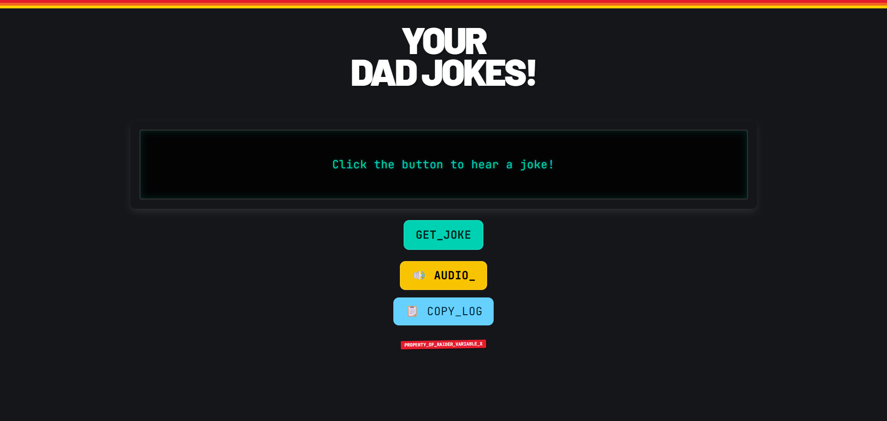
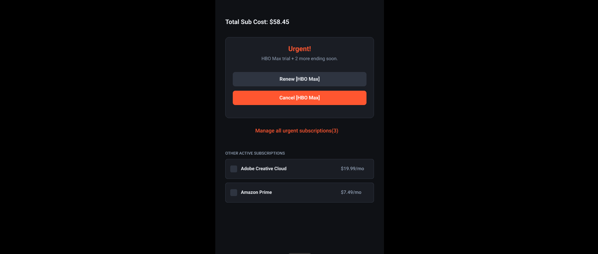
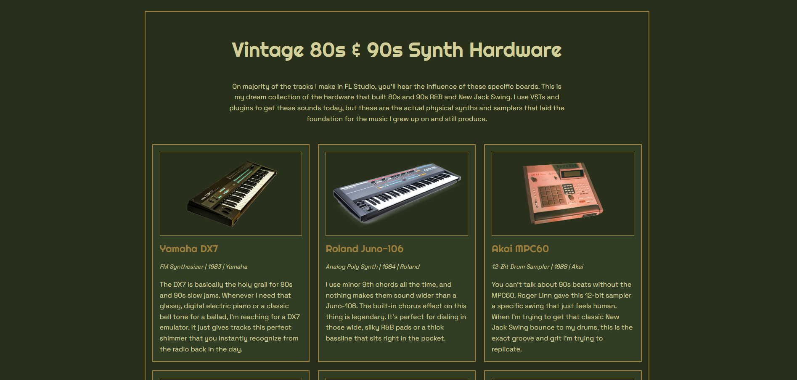

Data Engineering & SQL
Building ETL workflows, relational schemas, and cloud-ready data solutions using mySQL, noSQL, Python, and Power BI.
Computing Applications • Data Pipelines • 90s R&B Production
My name is Xavier, a student finishing my Bachelor of Science in Computing Applications at Texas Tech University. My focus is building practical data pipelines, responsive, accessible web applications, and automated reporting tools that turn raw data into clear decisions.
Outside of the classroom and VS Code, I spend my time producing 90s R&B and classic hip-hop beats in FL Studio, working with analog-style synth plugins, and dialing in hardware setups. That mix of technical problem-solving and retro audio aesthetics shapes how I design and build on the web.
Building ETL workflows, relational schemas, and cloud-ready data solutions using mySQL, noSQL, Python, and Power BI.
Handcrafting semantic HTML5, responsive CSS Flexbox layouts, custom properties, and clean GitHub Pages deployments.
Designing wireframes in Figma and creating custom retro logos and visual assets in Affinity Photo 2 and GIMP.
Composing 90s R&B and classic hip hop tracks in FL Studio with classic FM synth emulations, samplers, and tape saturation.

A retro-styled single-page web application built with semantic HTML, custom CSS styling, and interactive JavaScript, deployed live on GitHub Pages.
View Repository
An interactive user experience prototype designed in Figma to track recurring software and plugin subscriptions with clear visual hierarchy.
Explore Case Study
A responsive Flexbox showcase cataloging classic synthesizers and drum samplers that shaped 80s and 90s R&B production.
Launch Demo